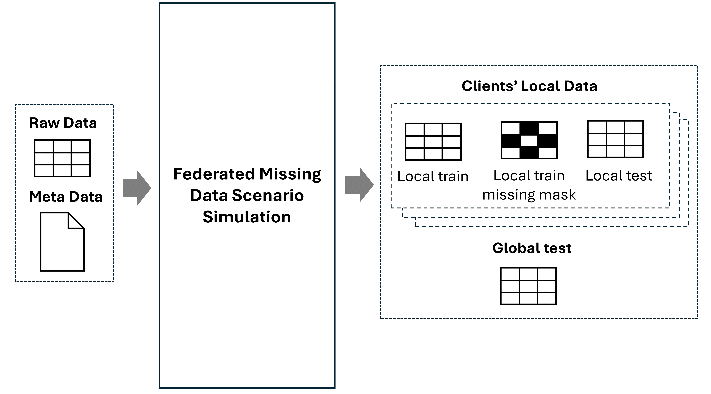

Simulating Federated Missing Data Scenarios
In this section, we will demonstrate how to simulate federated missing data scenarios using the fedimpute.simulator module.
The input to this module is a <np.ndarray> dataset and a data configuration dictionary data_config.
Details on how to preparing the dataset and the data configuration dictionary are provided in the Data Preparation section.
Overview and Basic Usage

The fedimpute.simulator module include the following core functionalities: (1) Data Partition: Partition the dataset horizontally into multiple clients.
(2) Missing Data Simulation: Introduce missing values in the dataset of each client. It takes the data and data configuration as input and perform data partition and missing data simulation logic based
on the parameters specified by the user and output the following:
- Clients' local training data
- Clients' local training data missing mask (representing the missing data)
- Clients' local test data (used for downstream local prediction evaluation)
- Global test dataset (used for downstream federated prediction evaluation)
The following example demonstrates how to use fedimpute.simulator module.
Initialize the Simulator class and call the simulate_scenario method to simulate_scenario simulate the federated missing data scenario.
from fedimpute.simulator import Simulator
simulator = Simulator()
simulation_results = simulator.simulate_scenario(
data, data_config, num_clients = 10, dp_strategy='iid-even', ms_mech_type='mcar', verbose=1
)
# or use the lite simulation function
simulation_results = simulator.simulate_scenario_lite(
data, data_config, num_clients = 10, dp_strategy='iid-even', ms_scenario='mar-homo',
dp_split_col_option = 'target', verbose=1
)
Classical Simulation Function - simulate_scenario
The simulate_scenario method has the following major parameters for data partitioning and missing data simulation.
Data Partitioning Parameters
The core parameters for data partitioning are number of clients and data partition strategies.
- num_clients (int) - Number of clients to partition the dataset.
- dp_strategy (str) - Data partitioning strategy. The available strategies are:
iid-even: Partition the data samples i.i.d across the clients with equal sample sizes.iid-dir: Partition the data samples i.i.d across the clients with sample sizes follows Dirichlet distribtion with parametercontrolled by dp_size_niid_alpha parameter. iid-random: Partition the data samples i.i.d across the clients with random sample sizes.iid-hs: Partition the data samples i.i.d across the clients with hub-and-spoke distribution, one client has significant more samples than the others.niid-dir: Partition the data samples non-i.i.d across the clients with sample sizes follows Dirichlet distribtion with parametercontrolled by dp_niid_alpha parameter. niid-path: Partition the data samples non-i.i.d across the clients with sample sizes follows a pathological distribution, each client have two classes of target label.
- dp_split_cols (Union[str, int, List[int]]) - Column index or name to split the data samples. If the column is continuous, it will be binned into categories by dp_reg_bins.
target: Split the data samples based on the target column.first: Split the data samples based on the first feature column.random: Split the data samples based on a random column.<column index>: Split the data samples based on the specified column index.
Other Parameters
- dp_size_niid_alpha (float) - The parameter for Dirichlet distribution in
iid-dirstrategy. - dp_niid_alpha (float) - The parameter for Dirichlet distribution in
niid-dirstrategy. - dp_local_test_size (float) = 0.1 - The size of local test set for each client for downstream local federated prediction evaluation.
- dp_global_test_size (float) = 0.1 - The size of global test set for the downstream federated prediction evaluation.
- dp_min_samples (int) - Minimum number of samples in each client.
- dp_max_samples (int) - Maximum number of samples in each client.
- dp_even_sample_size (int) - Sample size for each client in
iid-evenstrategy. - dp_sample_iid_direct (bool) - Instead of partition data i.i.d, sample data i.i.d from global population (original data) for each client.
- dp_local_backup_size (float) = 0.05 - backup sample size to avoid all samples in data to be missing
- dp_reg_bins (int) = 50 - Used for non-i.i.d data partitioning, if column for non-i.i.d partition is continuous, binning it into categories for meaningful non-i.i.d partiton.
Missing Data Simulation Parameters
The missing data simulation component is used to simulate missing data in the dataset of each client. The core concept here is the missing data heterogeneity which means the each client can have a different missing data characteristics in terms of missing ratio, missing feature and missing mechanisms.
The core parameters for missing data simulation are:
-
ms_cols (Union[str, List[int]]) - features to introduce missing values.
all: introduce missing values in all features (default).all-num: introduce missing values in all numerical features.
-
ms_mech_type (str) - Missing data mechanism type for all clients. The available mechanisms are:
mcar: Missing Completely At Random (MCAR) mechanism.mar_sigmoid: Missing At Random (MAR) mechanism simulated using logistic regression model.mar_quantile: Missing At Random (MNAR) mechanism simulated using quantile.mnar_sigmoid: Missing Not At Random (MNAR) mechanism simulated using logistic regression model.mnar_quantile: Missing Not At Random (MNAR) mechanism simulated using quantile.
-
ms_global_mechanism (bool) - If True, all clients have the same missing data mechanism. If False, each client has a different missing data mechanism. This is used for control homogenous or heterogeneous missing data scenario.
- ms_mr_dist_clients (str) - Missing ratio distribution across clients. The available options:
fixed: Missing ratio is the same for all clients.randu: Random uniform missing ratio with random float value for each client.randu-int: Random uniform integer missing ratio e.g., 0.1, 0.3 for each client.randn: Random normal missing ratio with random float value for each client.randn-int: Random normal integer missing ratio e.g., 0.1, 0.3 for each client.
- ms_mf_dist_clients (str) - Missing feature distribution across clients.
- 'identity': Each client has the same missing features.
- ms_mm_dist_clients (str) - Missing mechanism distribution across clients.
- 'identity': Each client has the same missing mechanism.
- 'random': Random missing mechanism function for each client.
Other Parameters
- ms_mr_lower (float) = 0.3 - Lower bound of missing ratio
- ms_mr_upper (float) = 0.7 - Upper bound of missing ratio
- ms_mm_funcs_bank (str) = 'lr' - missing mechanism function direction bank for MAR, MNAR mechanism. It is a string with any of
l,r,m,tfour types of functions.l: left side missingr: right side missingm: middle missingt: two sides missing
- ms_mm_strictness (bool) - If True, the missing mechanism function is strict, otherwise it is probabilistic.
- ms_mm_obs (bool) = False - This is for MAR mechanism, if True, the missing data is related to some fully observed variables.
- ms_mm_feature_option (str) = 'allk=0.2' - This is for MAR, MNAR mechanism, strategies for selecting features which missing value is correlated.
allk=<ratio>means select k (determined by ratio) highly correlated features from all features. - ms_mm_beta_option (str) = None, strategies set coefficient of logistic function for
mar_sigmoidandmnar_sigmoidmechanism type.
Lite Simulation Function - Simluting with Predefined Strategies and Scenarios
We provide a lite version of simulation function simulate_scenario_lite
which can be used to simulate the missing data scenario with predefined strategies and scenarios with way fewer parameters for ease of use.
from fedimpute.simulator import Simulator
simulator = Simulator()
simulation_results = simulator.simulate_scenario_lite(
data, data_config, num_clients = 10, dp_strategy='iid-even', ms_scenario='mar-heter',
dp_split_col_option = 'target', verbose=1
)
The simulate_scenario_lite method has the following major parameters for data partitioning and missing data simulation.
Data Partitioning Options - dp_strategy
- iid-even: Partition the data samples i.i.d across the clients with equal sample sizes.
- iid-dir@<alpha>: Partition the data samples i.i.d across the clients with sample sizes follows dirichlet distribution with parameter
alpha,e.g.iid-dir@0.5. - niid-dir@<alpha>: Partition the data samples non-i.i.d across the clients with dirichlet distribution with parameter
alpha,e.g.niid-dir@0.5 - niid-path@<k>: Partition the data samples non-i.i.d across the clients with pathological distribution with parameter
k,e.g.niid-path@2.
Missing Data Simulation Scenarios - ms_scenario
mcar- Missing Completely At Random (MCAR) mechanism.
ms_mech_type = 'mcar'
ms_global_mechanism = False
ms_mr_dist_clients = 'randu-int'
ms_mm_dist_clients = 'identity'
ms_mm_beta_option = None
ms_mm_obs = False
mar-heter- Missing At Random (MAR) mechanism with heterogeneous missing data scenario.
ms_mech_type = 'mar_sigmoid'
ms_global_mechanism = False
ms_mr_dist_clients = 'randu-int'
ms_mm_dist_clients = 'identity'
ms_mm_beta_option = 'randu'
ms_mm_obs = True
mar-homo- Missing At Random (MAR) mechanism with homogeneous missing data scenario.
ms_mech_type = 'mar_sigmoid'
ms_global_mechanism = True
ms_mr_dist_clients = 'randu-int'
ms_mm_dist_clients = 'identity'
ms_mm_beta_option = 'fixed'
ms_mm_obs = True
mnar-heter- Missing Not At Random (MNAR) mechanism with heterogeneous missing data scenario.
ms_mech_type = 'mnar_sigmoid'
ms_global_mechanism = False
ms_mr_dist_clients = 'randu-int'
ms_mm_dist_clients = 'identity'
ms_mm_beta_option = 'self'
ms_mm_obs = False
mnar-homo- Missing Not At Random (MNAR) mechanism with homogeneous missing data scenario.
ms_mech_type = 'mnar_sigmoid'
ms_global_mechanism = True
ms_mr_dist_clients = 'randu-int'
ms_mm_dist_clients = 'identity'
ms_mm_beta_option = 'self'
ms_mm_obs = False